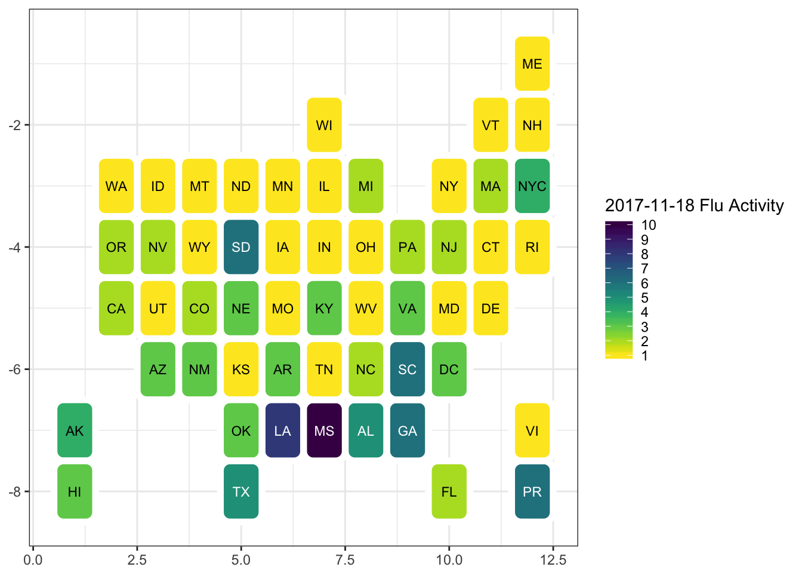

Using hexagons can be a useful tool for mapping US state data. A gist by @hrbrmstr gave a nice demo here, and the original geojson file used for mapping state data is here
The code below adapts that code and data.
Track down where this file came from and what blog??
# Load packages
suppressPackageStartupMessages({
library(rgdal);
library(dplyr);
library(ggplot2);
library(maptools);
library(rgeos);
library(sp);
library(viridis)
})
# load some state data
load(file = "data/state_DF.RData")
# load data
us <- readOGR("data/us_states_hexgrid.geojson", "OGRGeoJSON")## OGR data source with driver: GeoJSON
## Source: "data/us_states_hexgrid.geojson", layer: "OGRGeoJSON"
## with 51 features
## It has 7 fields## Source: "data/us_states_hexgrid.geojson", layer: "OGRGeoJSON"
## Driver: GeoJSON; number of rows: 51
## Feature type: wkbPolygon with 2 dimensions
## Extent: (-137.9747 26.39343) - (-69.90286 55.3132)
## CRS: +proj=longlat +datum=WGS84 +no_defs
## Number of fields: 7
## name type length typeName
## 1 cartodb_id 0 0 Integer
## 2 created_at 11 0 DateTime
## 3 updated_at 11 0 DateTime
## 4 label 4 0 String
## 5 bees 2 0 Real
## 6 iso3166_2 4 0 String
## 7 google_name 4 0 String# add XY for centroid to use for labels
centers <- cbind.data.frame(data.frame(gCentroid(us, byid=TRUE), id=us@data$iso3166_2))
# join w state data:
us<-merge(us, stateDF, by.x="iso3166_2", by.y="state.abb")
us_map <- ggplot2::fortify(model = us, region="iso3166_2")
# Plot Hex US Map
gg <- ggplot() + geom_map(data=us_map, map=us_map,
aes(x=long, y=lat, map_id=id),
color="white",fill="#ffffff", size=0.5) +
# this is the white outline
geom_map(data=us@data, map=us_map,
aes(map_id=iso3166_2),
fill="#ffffff", alpha=0, color="white",
show.legend = FALSE)+
# this is the fill (mean number of days with min temperature below freezing (1931–1960) in capital or large city)
geom_map(data=us@data, map=us_map,
aes(fill=Frost, map_id=iso3166_2))+
coord_map() + scale_fill_viridis() +
# the state label for each
geom_text(data=centers, aes(label=id, x=x, y=y), color="white",
size=4, show.legend = F) +
theme_bw(base_family = "Roboto Condensed") + # change font if it's not working
labs(title="Mean # Days with Frost in State Capital (1931-1960)", x=NULL, y=NULL) +
theme(panel.border=element_blank(),
panel.grid=element_blank(),
axis.ticks=element_blank(),
axis.text=element_blank())## Warning: Ignoring unknown aesthetics: x, y#example 2:
#devtools::install_github("hrbrmstr/statebins", force=TRUE)
library(statebins)
g <- cdcfluview::ili_weekly_activity_indicators(2017)
ggplot(g[g$weeknumber==46,])+
geom_statebins(aes(state=statename, fill=activity_level)) +
viridis::scale_fill_viridis(name="2017-11-18 Flu Activity", direction=-1,
breaks=c(0:10)) +
theme_bw()